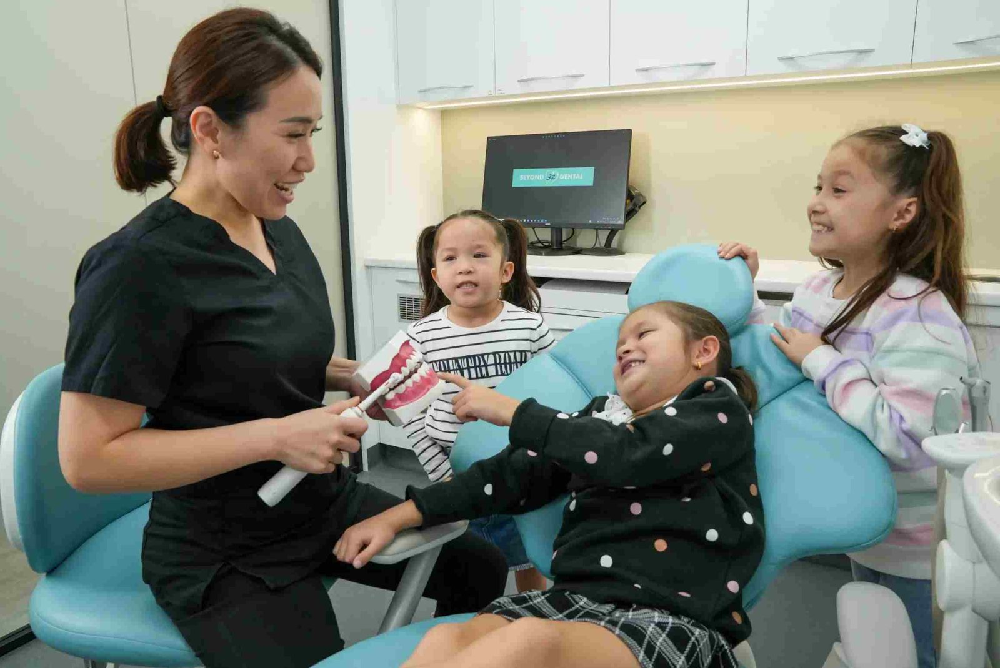

Tiny tots
Tiny tots
Tiny totsFirst dental visit
Try Beyond 32 Dental, located nearby
Are you looking for a Dural dentist that matches the requirements you’re looking for in family dental care? That being the case, we’d like to welcome you to Beyond 32 Dental.
 5.0 from 360+ Google reviews
5.0 from 360+ Google reviews
We’re a well-established dental practice situated just a 10-minute drive from Dural. Open 6 days a week, patients have access to easy, 3-hour free parking.
As such, we’re well-positioned and well-equipped to become your go-to family dentist.
 From Dural
From Dural
We’re excited to announce that Beyond 32 Dental has moved to a new and improved location with enhanced facilities and the same trusted dental care! Find us on the 1st Floor, 114 Yarrara Rd, Pennant Hills.

Visiting any Dural dental practice for the first time can be a little stressful, but don’t let that worry you.
We’re a husband and wife team who believe in treating our patients in a way that we ourselves would like to be treated, with care, respect, and compassion.
Don’t worry if you’re long overdue a check-up. We’re not here to judge.
Incidentally, if you’re a nervous or anxious patient, then please be aware that we can also provide in-house dental sedation should you require it.
Similar to any Dural dental practice, we provide a wide range of general, restorative, and cosmetic dental treatments for all ages, from tiny tots through to teens and adults to seniors.
Whether you’re looking for…



…we’ve got you covered.
All of this is backed by a team of dentists who are highly experienced in delivering gentle dentistry, just as you’d expect from a good Dural dental practice.
These are just some of the reasons you might want to consider us your go-to Dural dentist.
We’ve invested in the latest state-of-the-art equipment and dental technology to make many of our procedures faster, safer and more comfortable for our patients.
Digital keyhole implant surgery: no stitches, faster healing.
If you’re a Dural resident considering dental implants to replace one or more missing teeth, then you’ll be pleased to know that our dentists provide the latest digital keyhole implant surgery. This means chair-time is greatly reduced, there’s no need for stitches, and healing time is considerably faster. This advanced type of implant surgery is something that your local Dural dental practice may not provide.
Modern dentistry is evolving all the time, so we make sure that we don’t lag behind by updating our skills on a regular basis.
So if you’re looking for the very latest orthodontic treatment, for example, then you may be interested to know that we can provide Powerprox six-month braces which utilise the latest NiTi shape memory wires.
To complement our modern dental skills, we also use top name brands to ensure patients receive the best possible outcome and longevity. This includes:
We believe everyone should have access to high-quality dental care, which is why we offer a variety of payment plans to help spread the costs of your dental treatment. Please enquire for more information when booking.
We’re open 6 days a week, from 9am to 6pm Monday to Friday and from 9am to 3pm on Saturdays, with late night appointments available on Thursdays by request. So you can always combine a trip to the dentist with a bit of shopping.

So while we may not be a dentist in Dural per se, we aim to provide our patients with high-quality dental care tailored to their individual needs and/or budget.
So if you can’t find a Dural dentist that’s good with your kids, or your Dural dental practice doesn’t provide the latest dental techniques and technologies that you require, then we’d love to welcome you to Beyond 32 Dental. Call us now on (02) 9158 6334!
Any surgical or invasive procedure carries risks. Before proceeding, you should seek a second opinion from an appropriately qualified health practitioner.